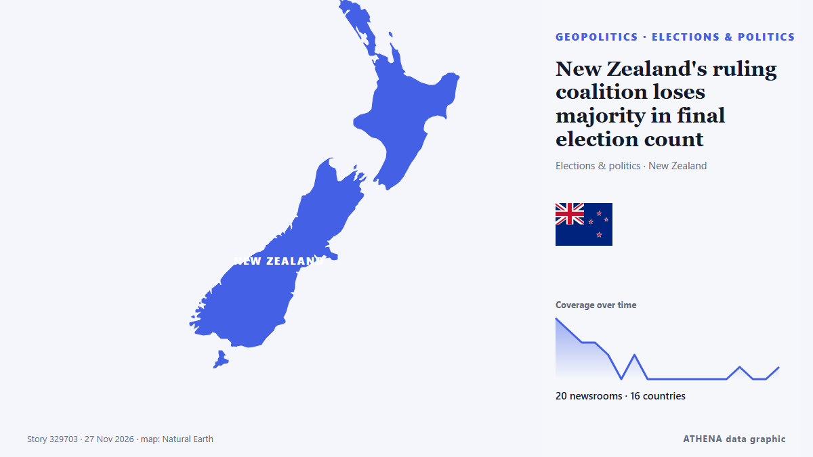

Risk 7.5Elevated
Geopolitics, the economy and maritime shipping — cross-checked across countries.
Geopolitics
All geopolitics >Highest risk now

Rising riskRisk up in the last 24 hours
Maritime & shipping
Maritime desk >Highest risk now
Risk 4.7Moderate
Is Strait of Hormuz open today? Ships still crossing as tanker attacks disrupt traffic
Read the evidence ›
Watch listChokepoints, ports and other shipping reports
- Strait of HormuzDisruptedattack / strike · risk 6.6 · 140 newsrooms (72 h)
- Kerch Strait / Black SeaDisruptedattack / strike · risk 7.5 · 135 newsrooms (72 h)
- SingaporeDisruptedattack / strike · risk 6.6 · 140 newsrooms (72 h)
Every headline, checked across countries.
ATHENA Glaux reads 742 news outlets worldwide. A story becomes a verified event only when independent outlets report it. Each event shows who was first and a risk score with its reasons.
1,457events in 24 hours
742outlets followed
43minutes between updates
Earthquake or flood near you this week?
Type your town and see the earthquakes, floods, storms and official warnings near it, with a 72-hour emergency kit checklist. Free, no sign-up, and your place stays on your device.
Reports drift in from independent outlets - when two meet on the same story, it becomes a verified event.
How ATHENA checks a story
- CollectReports arrive from independent outlets in many countries.
- MatchWhen two outlets meet on the same story, it becomes a verified event.
- ExplainEach event shows who was first, how far it spread and why the risk is what it is.
Global risk outlook
Weekly and monthly reviews: the highest-risk events, the trends by domain and region, and what to watch next.
Read the outlook ›Daily briefing
The ten most important world events of the day, the rising risks and the new events, with every number explained.
Open today's briefing ›
GeopoliticsNew Zealand's ruling coalition loses majority in final election count
Centrist Opportunity Party emerges as kingmaker as Prime Minister Christopher Luxon's coalition falls one seat short of parliamentary majority. from Anadolu Agency (English)
5.4Importance
1.2Risk · low
92%Confidence
Technology & Cyber
Musk pledges two SpaceX shares for every US child
Elon Musk plans to gift every child in the United States two SpaceX shares, as he attempts to build public support for his satellite and AI businesses during a period of intense pu... from Oman Observer
Trade & Industry
Thanksgiving storm knocks out power, disrupts flights on US East Coast
More than 836,000 US utility customers had no power. from The Straits Times
Sponsored
Cybernetics and Artificial Intelligence Lab Welcome to the Cybernetics and Artificial Intelligence Laboratory, established at the Department of Business Administration of the National and Kapodistrian University of Athens. The lab is headed by Professor Dimitrios Thomakos. The lab aims to do research that can be published in top venues. Our research uses tools and methods of Artificial Intelligence, and lies in the following areas: - Forecasting - Decision making - Cyber security - Finance We are always looking forward to collaborating with exceptional students!
Learn more – Cybernetics and Artificial Intelligence LabShips at the world's chokepoints now
Live AIS counts. Tap or hover a bar for the detail.
Latest reports
Under-attack Palestinians find unlikely ally in Israeli retired general
Global fashion brands shift orders from Bangladesh to India amid unrest
Erdogan Ratifies Turkey-Saudi Arabia-Pakistan Defense Pact
Conflicts, El Nino Worsening Hunger — UN
German parliament approves record $610B budget for 2027
Russian hybrid attacks could cause ‘mass casualty event’ in Europe, report warns
Hackers Breach US Air Force’s Flagship Cloud One Platform
US pushed Venezuela, Iraq to consider leaving OPEC, sources say
Energy & Environment
Trump backs Iraqi leader’s efforts to assert more state authority
Nov 27 (Reuters) - US President Donald Trump on Friday backed the Iraqi leader's drive to assert state control, including stopping the smuggling of Iraqi oil, moves that put Baghdad in direct… from Al-Monitor
Economy & Markets
Trump demands probe into ‘fake’ US GDP figures
President Donald Trump called Thursday for an investigation into a routine revision of economic growth figures as he pushed his groundless claims of interference in the US midterm elections. from Vanguard
Geopolitics
Iran denies involvement after 2 Italian technicians killed in attack on Kuwait site
Two Italians were killed in a drone attack in Kuwait on Thursday that Italy and Kuwait blamed on Iran, although Tehran has denied any involvement. from CBC News (alternative feed)
Geopolitics, Politics & Security
More ›Terrorism & security
UN rapporteur Albanese condemns Costa Rica’s decision to deny her entry
UN Special Rapporteur Francesca Albanese condemned Costa Rica’s decision to deny her entry into the country, rejecting allegations of links to terrorism and demanding that authorities substantiate… from Middle East Monitor
- Wars & conflicts
Ukraine says Benghazi drone attack not directed against Libya
- Elections & politics
With US midterms underway, courts rebuff Trump's pressure on state election officials
- Wars & conflicts
Russian Drone Strikes Kill Utility Workers in Kramatorsk
- Elections & politics
Sanchez makes last bid to beat the right ahead of Spanish vote
Economics, Finance & Markets
More ›Banking & credit
EU leaders struggle to agree on long-term budget, $49bn Ukraine loan
The bloc is holding an extraordinary summit in Brussels to discuss its budget proposal for 2028 to 2034. from Al Jazeera English
- Crypto & digital assets
‘An epic fail’: Crypto world blasts Netflix’s ‘The Altruists’ for turning SBF’s crimes into a love story
- Banking & credit
Best Black Friday SSD deals 2026
- Growth & indicators
Lula picks banker Luiz Carlos Trabuco to run the Finance Ministry in his fourth term
- Banking & credit
Malaysia wants priority over other lenders if it backs AirAsia
Trade, Industry & Infrastructure
More ›Aviation, rail & road
Norwegian Norse Atlantic airline files for bankruptcy
Norwegian low-cost carrier Norse Atlantic, hit by surging jet fuel prices, said Friday that it was filing for bankruptcy, just hours after it saw its aircraft leasing contracts terminated. from The Local Norway
- Aviation, rail & road
Powerful Storm Disrupts US Thanksgiving, Leaves Over 900,000 Without Power
- Tariffs & export controls
Five takeaways from Trump’s new tariffs
- Shipping & ports
Global maritime trade set for zero growth in 2026
- Tariffs & export controls
India's Modi to revive parliament expansion bill tied to women's quota, sources say
Energy, Resources & Environment
More ›Renewables & storage
Envision Energy partners with Greensteel Australia on 400 MW Green Hydrogen System for low-carbon steelmaking
Envision Energy, a global leader in green technology announced a strategic partnership with Greensteel Australia, the Australian-owned company building the. from Cyprus Shipping News
- Pollution & biodiversity
Thailand Tests Find High Lead, Arsenic in River Shellfish
- Extreme weather & natural disasters
Major storm batters US on Thanksgiving holiday
- Oil & gas
Qatar LNG exports hit highest level since U.S.-Iran war began, Bloomberg reports
- Oil & gas
Petronas Names ‘World's First’ Nearshore FLNG Facility
Technology, AI & Cybersecurity
More ›Robotics & automation
Chief Minister inaugurates care home for elderly men
Prime Minister Dr. Harini Amarasuriya visited the Victoria Elderly Care Home in Rajagiriya on the morning of 20th of November. from The Island
- Chips & computing
Taiwan elections: 5 things to know about city races eyed by China and US
- Artificial intelligence
SAP weighs cutting at least 10,000 positions in AI restructuring
- Chips & computing
Bitcoin price drops below $59K as Anthropic joins tech stock rebound
- Media & disinformation
French far-right leader Bardella faces fresh anti-Semitism accusations in media reports
Business, Companies & Investment
More ›Corporate strategy
New growth drivers fuel China's industrial profit gains
China industrial profits, October Year-to-date: 16.0% y/y prior (jany - September) 15.5% October alone: 20.1% y/y prior 14.4% Profit growth at China's industrial firms accelerated sharply in October… from investingLive (ForexLive)
- Sectors & company risks
Economic Confidence in Greece Falls to Its Lowest Level Since 2022
- Sectors & company risks
These $297 Meta Quest 3S Black Friday deals come with a $50 gift card
- Bankruptcies & restructuring
6 new Negri Sembilan exco members appointed
- Investment & capex
Mnangagwa in Kenya for inaugural Bi-National Commission as Nairobi, Harare seek to boost trade
Accidents & emergencies
More ›Accidents & emergencies
Three children missing after fire in Roma settlement. Relocation plans have stalled for months
The settlement in Kolačkov is threatened by a landslide. from The Slovak Spectator
- Accidents & emergencies
Ukrainian man in critical condition after setting himself on fire in central Warsaw
- Accidents & emergencies
Blackouts and floods fail to derail Sabah’s 42,808 SPM candidates
- Accidents & emergencies
Death toll in Pakistan building collapse rises to 8 with about 10 missing
- Accidents & emergencies
Egyptian authorities arrest motorist over tanker crash that killed 31
Three ways to read today
Start with the one that fits your timeVerified events
Ranked by how widely they are reported
- Binance lifts withdrawal suspension after $6.3 billion crypto heist135 outlets · 53 countriesRisk 3.5
- Nvidia Blackwell chips found at China data center linked to Alice Huang: Report147 outlets · 52 countriesRisk 4.3
- Trump Says Iran Still Has a Chance to Make a Deal139 outlets · 49 countriesRisk 6.6
- Drone Strikes Kill 2 in Kursk and Bryansk Regions Amid Overnight Attacks58 outlets · 33 countriesRisk 6.9
- Pakistan set to host talks with Saudi Arabia and Turkey under trilateral defense pact72 outlets · 31 countriesRisk 3.8
Assessment Desk
Ask a question and read a reasoned assessment of a leading story, with what would prove it wrong.
Open the Assessment Desk ›Today in numbers
| 20:00 | 1807 |
|---|---|
| 21:00 | 1150 |
| 22:00 | 906 |
| 23:00 | 539 |
| 00:00 | 465 |
| 01:00 | 508 |
| 02:00 | 76 |
| 03:00 | 189 |
| 04:00 | 207 |
| 05:00 | 127 |
| 06:00 | 183 |
| 07:00 | 306 |
| 08:00 | 314 |
| 09:00 | 371 |
| 10:00 | 637 |
| 11:00 | 289 |
| 12:00 | 687 |
| 13:00 | 245 |
| 14:00 | 479 |
| 15:00 | 459 |
| 16:00 | 397 |
| 17:00 | 395 |
| 18:00 | 653 |
| 19:00 | 476 |
Risk of today's events
Geopolitics83Economy & Markets36Trade & Industry35Business20Technology & Cyber18Energy & Environment17Maritime2
Emerging signals
- Sudden surge · Active nowDEA
- Rising risk · Active nowMackenzie, spouse, second-in-command convicted on all five counts in Shakahola Terrorism Case
- Sudden surge · Active nowUS East Coast
- Sudden surge · Active nowChristopher Luxon
- Sudden surge · Active nowSAP
Official warnings
- M 6.5 - Vanuatu regionM6.5 · USGS ·
- M 5.9 - 238 km SW of Yanglong, ChinaM5.9 · PAGER yellow · USGS ·
Stay informed
ATHENA Weekly Risk Picture
The week's biggest geopolitical, economic and shipping risks, cross-checked and scored.
Every Friday at 08:00 Athens time · free · in English
Subscribe freeATHENA on Telegram
News the moment it is published: breaking events at risk 6 or more, an hourly round-up, risk-tracker updates and the daily briefing at 10:00.
Free · posts in English · leave at any time
Join the channelSign-up is handled by beehiiv with double opt-in: nothing you type is sent to ATHENA, and every issue has an unsubscribe link.
Risk trackers
More ›Strait of HormuzRisk 5.312 new this week · down from 17 the week beforeRed Sea shippingRisk 7.415 new this week · down from 44 the week beforeGreece–Turkey relationsRisk 0.97 new this week · about the same as the week beforeCyprusRisk 3.614 new this week · down from 18 the week beforeSanctions on RussiaRisk 5.315 new this week · about the same as the week beforeRussia–Ukraine warRisk 7.5212 new this week · down from 272 the week beforeIsrael, Gaza & the West BankRisk 7.071 new this week · down from 86 the week beforeTaiwan StraitRisk 4.610 new this week · down from 13 the week beforeOil & gas pricesRisk 2.135 new this week · about the same as the week beforeSuez CanalRisk 0.00 new this week · down from 3 the week beforeTurkish StraitsRisk 0.00 new this weekPanama CanalRisk 0.01 new this week · up from 0 the week beforeShadow fleetRisk 0.01 new this week · down from 3 the week beforeBlack Sea shippingRisk 0.00 new this week · down from 5 the week beforeCentral banks & interest ratesRisk 4.249 new this week · about the same as the week beforeGreek economyRisk 1.37 new this week · about the same as the week beforeEastern Mediterranean energyRisk 0.03 new this week · about the same as the week beforeBalkansRisk 4.917 new this week · down from 22 the week beforeMediterranean migrationRisk 3.82 new this week · down from 3 the week before
Global risk outlook — week 48, 2026 (23–29 Nov) ›
Around the world
Southeast AsiaTrump says trade deal reached between the U.S. and the Philippines
58 events
North AmericaNvidia Blackwell chips found at China data center linked to Alice Huang: Report
57 events
Middle East & North AfricaPakistan set to host talks with Saudi Arabia and Turkey under trilateral defense pact
57 events
Sub-Saharan AfricaMusk pledges two SpaceX shares for every US child
45 events
East AsiaS. Korean won strengthens against U.S. dollar on foreign inflows
44 events
Russia & EurasiaRussian Drone Strikes Kill Utility Workers in Kramatorsk
40 events
Latin America & CaribbeanHuawei found guilty in trade secrets theft case
31 events